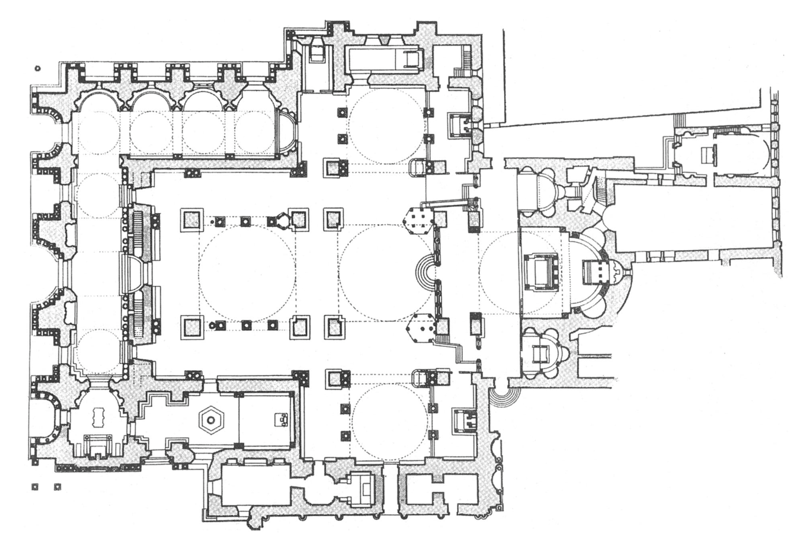

Reflection



Contribution
Audio Processing Software
- Dynamic Control of Surround Spatialization
- Dynamic Control of Surround Sound Dynamics
- Seamless Integration with Digital Audio Workstations

Amplification gives us...
- Loudness!
- Precise Control in the Studio
...but we lose...
- Acoustic Sound Projection
- Acoustic Dynamics

Reverb
EQ
Expansion
Automation
Gating
Delay
Pitch Shift
Acoustics

Compression

Uses for Compression
- Increase Perceived Loudness
- Improve Intelligibility
- Improve Articulation
- Smooth A Performance
- Shape Transients
- Extract Ambience
- De-ess Vocals
- Balance Multiple Signals
- Add Distortion
Sidechain Compression
Pierre Béique Organ at the Montréal Symphony
6,489 Pipes!